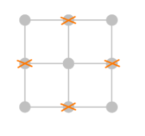
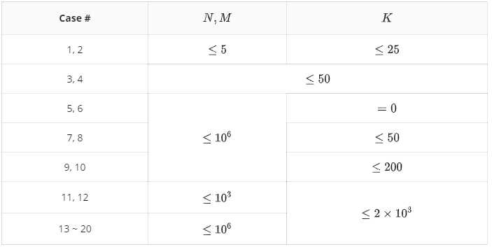

上帝说，不要圆，要方，于是便有了这道题。
由于我们应该方，而且最好能够尽量方，所以上帝派我们来找正方形。上帝把我们派到了一个有 $N$ 行 $M$ 列的方格图上，图上一共有 $(N + 1) \times (M + 1)$ 个格点，我们需要做的就是找出这些格点形成了多少个正方形（换句话说，正方形的四个顶点都是格点）。
但是这个问题对于我们来说太难了，因为点数太多了，所以上帝删掉了这 $(N + 1) \times (M + 1)$ 中的 $K$ 个点。既然点变少了，问题也就变简单了，那么这个时候这些格点组成了多少个正方形呢？
第一行包含三个整数 $N$，$M$，$K$，代表棋盘的行数、列数和不能选取的顶点个数。 保证 $N, M \geq 1$，$K \leq (N + 1) \times (M + 1)$。
接下来 $K$ 行，每行包含两个正整数 $X$，$Y$，代表第 $X$ 行第 $Y$ 列的格点被删掉了。保证 $0 \leq X \leq N, 0 \leq Y \leq M$，且不会出现重复的格点。约定每行的格点从上到下依次用整数 $0$ 到 $N$ 编号，每列的格点依次用 $0$ 到 $M$ 编号。
输出一个正整数，代表正方形个数对 $100\,000\,007$（$10^8 + 7$）取模之后的数值。
2 2 4 1 0 1 2 0 1 2 1
1
7 10 5 2 3 1 5 6 2 3 5 2 6
429
2 2 4 0 0 2 2 0 2 2 0
【样例 1 解释】
如图所示，我们删掉了其中的四个格点，那么剩下的唯一的正方形便是最大的 $2 \times 2$ 的正方形了。

【样例 3 解释】
还剩下一个边长为 $\sqrt 2$ 的正方形。
【数据规模】

 Comet OJ
Comet OJ